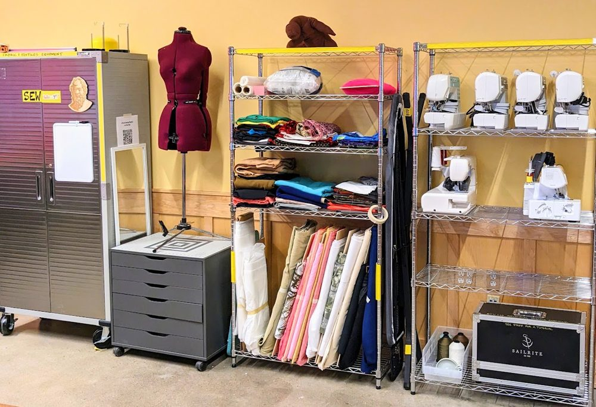

Sewing & Textiles
Sewing and textiles equipment and materials are labeled YELLOW.

Sew what?
Sewing and textiles training happens as requested by staff and community members, and is the subject of some workshops. See the BTU calendar for upcoming workshops.
See the Mischief Makers page to contact one of our community experts for sewing tutorials.
Sewing and textiles equipment
- Multi-stitch sewing machines
- 4-thread serger
- Industrial sewing machine
- Cutting mats
- Fabric scissors and knives
- Pins and needles
- Iron and ironing board
- Random fabrics